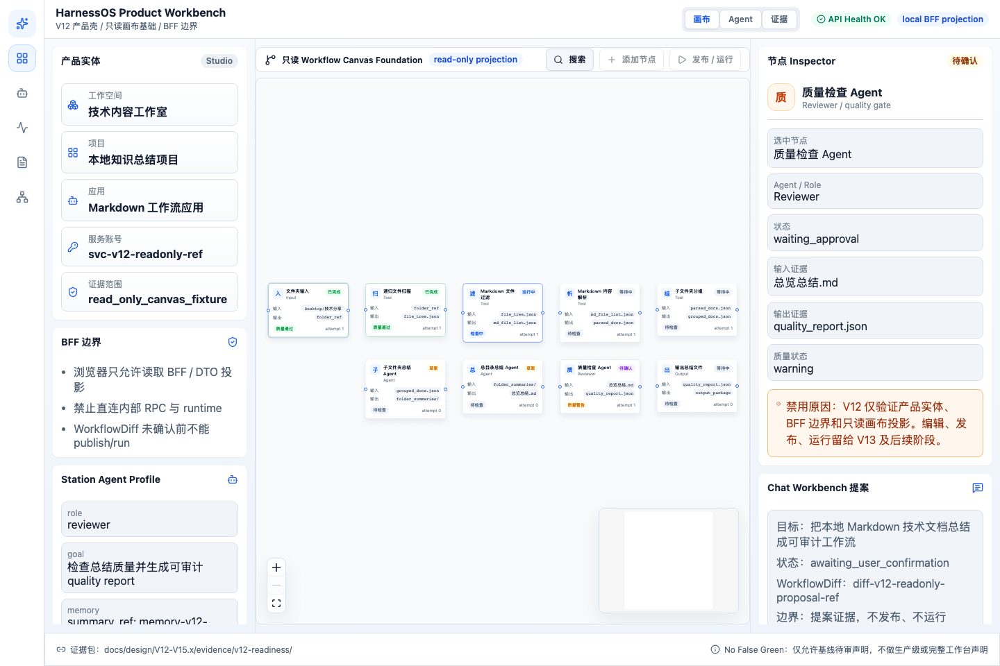

结论
PASS
V12 只读浏览器工作台基础可进入下一轮审计。
V12 browser E2E evidence package
本报告只证明 V12 的产品实体、BFF 边界、只读画布、节点 Inspector、禁用动作原因、API health 和 WorkflowDiff proposal handoff 基础能力。它不证明 V13 可编辑 Studio、完整追平 Xpert、生产就绪或 Agent executor readiness。
PASS
V12 只读浏览器工作台基础可进入下一轮审计。
npm --prefix apps/workflow-console run buildnpx playwright test e2e/workflow-v12-readonly-canvas-foundation.spec.tsV12 不是可编辑 Studio。
发布、运行、添加节点均保持禁用或留给后续阶段。

v12-acceptance-data.jsonbrowser-network-log.jsonproduct-entity-projection.jsoncanvas-read-model.jsonprd-spec-review.md